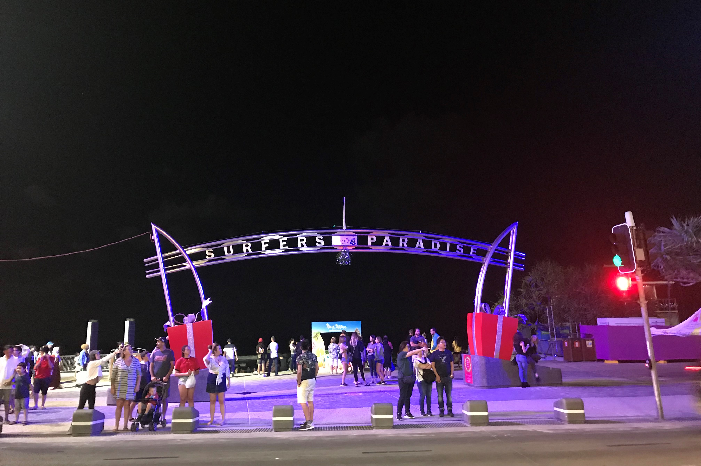

Home
Image Map
Photo Gallery
Video
Sitemap
Source Log
Feedback
Photo Gallery
Q1 Skypoint
The Q1 building is 322 meters high, the tallest building in the southern hemisphere.

Surfers Paradise
Surfers Paradise is bordered by the Pacific Ocean and has 75 kilometers of beaches, the longest beach coast in the world.
Burleigh Heads
As part of the Burleigh Head National Park, there are no high-rise buildings, which is suitable for visitors who like quietness.
The Spit
The movie Aquaman set here. It is a popular location for picnics, fishing, boating, dog walking and relaxing.
Movie World
This is a theme park that film fans have to go to, with the theme of Batman and the complete reproduction of the city scenes.
Sea World
Not only are there many amusement facilities, but also marine life can greatly enrich our knowledge of the sea.
Natural Bridge
Natural caves are formed here due to water erosion. Watching glow worms at night is the main activity.
Paradise Country
You can watch the performance of sheep herding dogs, sheep shearing, Australian darts. Enjoy the most real Australian farm life.
Pacific Fair
The Gold Coast's unmissable shopping & dining destination with 400 stores to explore. Open daily in the heart of Broadbeach.
Elk Espresso
Quite possibly the Gold Coast's ultimate breakfast. You can enjoy brunch while enjoying the sea view.